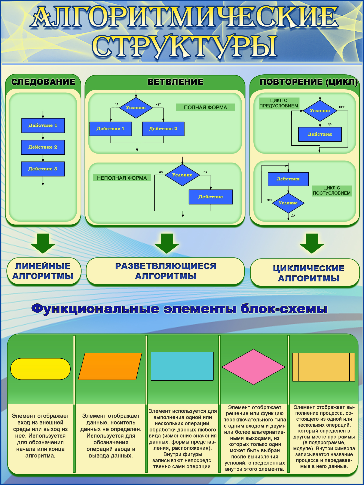

ЛЕКЦИЯ №5. (2 часа)
ТЕМА: «ПОНЯТИЕ АЛГОРИТМА, СВОЙСТВА АЛГОРИТМА, РАЗЛИЧНЫЕ СПОСОБЫ ЗАПИСИ АЛГОРИТМОВ»
Рассматриваемые вопросы:
1. Понятие алгоритма
2. Свойства алгоритма
3. Способы записи алгоритмов
4. Алгоритмические структуры
Литература: учебник Информатика и ИКТ» М.С. Цветкова, «Академия», 2011, стр.89-102
Ход лекции:
1. Понятие алгоритма
Алгоритмом называется точное и понятное предписание исполнителю совершить последовательность действий, направленных на решение поставленной задачи. Слово «алгоритм» происходит от имени математика Аль Хорезми, который сформулировал правила выполнения арифметических действий. Первоначально под алгоритмом понимали только правила выполнения четырех арифметических действий над числами. В дальнейшем это понятие стали использовать вообще для обозначения последовательности действий, приводящих к решению любой поставленной задачи. Говоря об алгоритме вычислительного процесса, необходимо понимать, что объектами, к которым применялся алгоритм, являются данные. Алгоритм решения вычислительной задачи представляет собой совокупность правил преобразования исходных данных в результатные.
2. Свойства алгоритма
Основными свойствами алгоритма являются:
3. Способы записи алгоритмов
Алгоритм должен быть формализован по некоторым правилам посредством конкретных изобразительных средств. К ним относятся следующие способы записи алгоритмов: словесный, формульно-словесный, графический, язык операторных схем, алгоритмический язык.
4.Основные алгоритмические структуры
Наибольшее распространение благодаря своей наглядности получил графический (блок-схемный) способ записи алгоритмов.
Блок-схемой называется графическое изображение логической структуры алгоритма, в котором каждый этап процесса обработки информации представляется в виде геометрических символов (блоков), имеющих определенную конфигурацию в зависимости от характера выполняемых операций. Перечень символов, их наименование, отображаемые ими функции, форма и размеры определяются ГОСТами.
При всем многообразии алгоритмов решения задач в них можно выделить три основных вида вычислительных процессов:
